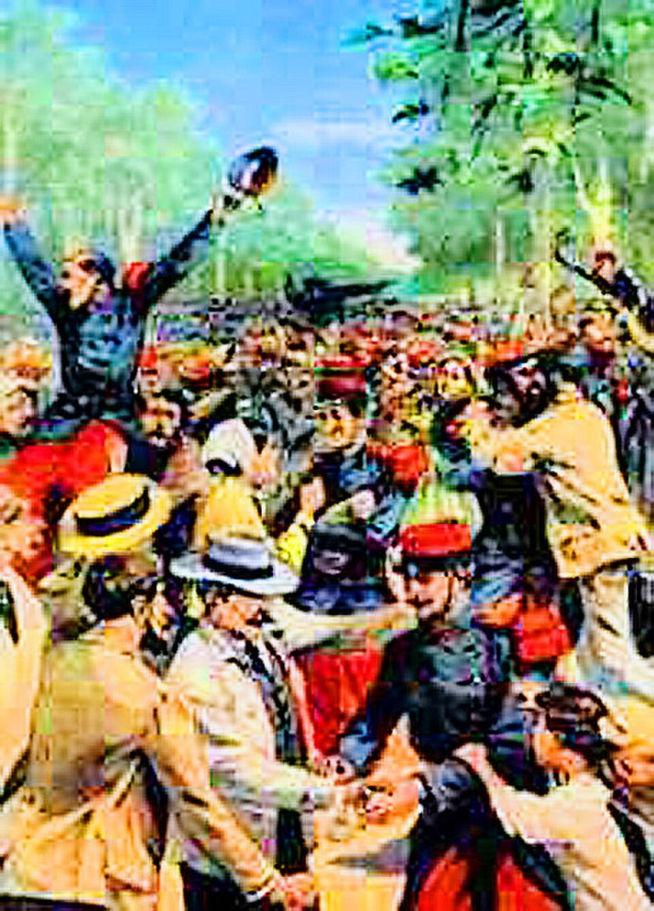

Glory to the soldiers who would not shoot
- who
- Montéhus
- what
- “Gloire au 17e”
- when
- 1907
- where
- France

In June 1907 winegrowers in the Languedoc rose up against ruin. Soldiers of the 17th infantry regiment, many of them local men, were sent in and refused to fire on their own people. The chansonnier Montéhus wrote "Gloire au 17e" in their honour, and it was sung for decades as a hymn of collective refusal.
The original pre-1926 disc is still being hunted; Montéhus's 1936 remake streams on Phonobase.